湾区企业家的新玩法！人生第一居所？在从都！
当人的财富和社会威望积累到一定程度时，他所追求的，便是一种内心的满足，以及沉醉其中的生活方式。
2019 年，几位活跃在华南的顶尖企业家，向房产君敞开心扉，他们打拼半生，是圈内颇有名望的富豪。
他们也走遍世界，有过上市敲钟的高光时刻，旗下物业更是遍布全国。不过有趣的是，这群人未来的第一居所，却不在珠江新城，不在 CBD。
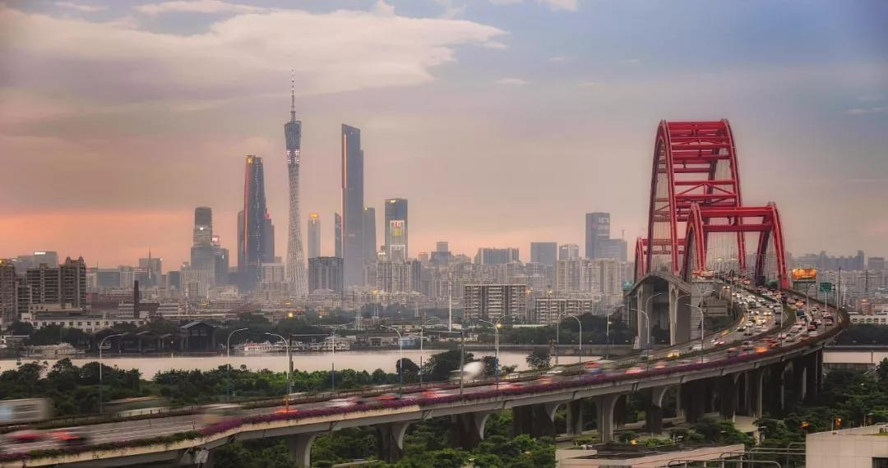
| 珠江新城，未必是企业家的居住首选
搬家行动：企业家有了新玩法
这是为什么？
在他们这个层级，对财富的理解不一样，对圈层的需求不一样。自然，对第一居所的要求更是不同：
Q 先生，60 岁左右，知名开发商，公司在香港上市，他每星期的上半周在公司，下半周则在从化，特别喜欢打高尔夫，并认定未来的第一居所，就在从化。
J 女士，50 岁左右，生长在北京，从事金融、贸易行业。她特别喜欢投资，在广州买了不少别墅，希望在私家花园里：“一年四季都能看到绿地，看到花”。
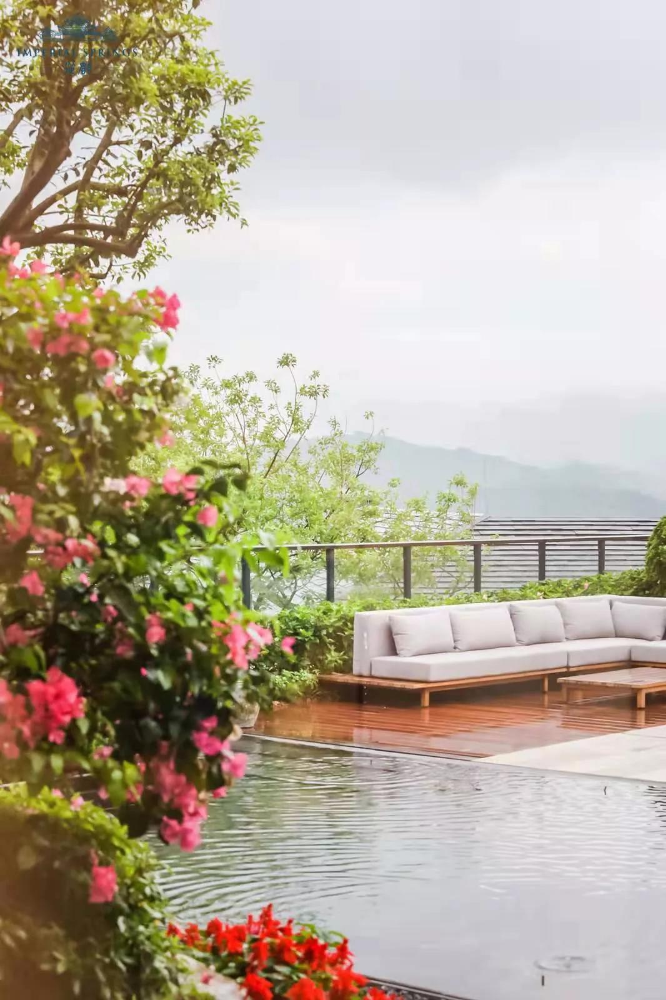
｜谁不喜欢梦幻庭院不过，她在广州东部的别墅，沿线都是化工厂，种的树没有一棵能存活；在风景区的别墅，又因为物业跟不上，花园长满杂草。
直到她来从化凤凰山下参加 “蓝色 3D 晚宴”，才发现原来有如此梦幻的房子，并一口买下两套别墅，这里有温泉，有山有水，有湿地公园，被她称为终极置业之地。
其实，不管是 Q 先生还是 J 女士，他们选择的都是同一个庄园，由侨鑫集团雕琢 8 年，投资 80 亿的——从都国际庄园。
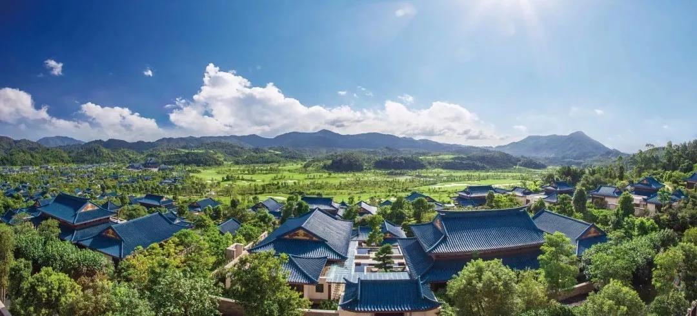
| 志在百年庄园的从都而这种企业家把从都当成未来第一居所，所发起的 “搬家行动”，又渐渐成为 “从都现象”。
这种现象有着鲜明的特征：
• 这批企业家多数超过 50 岁，事业有成，正准备二代接班的情况。
• 买从都别墅，不是为了单纯的 “度假 + 投资”，而是作为未来第一居所，即便他们在珠江新城有物业，在城区有别墅。
• 对从都的生活方式，地理位置，以及百年庄园的理念非常认同，每一次前来，都能感受身心愉悦。
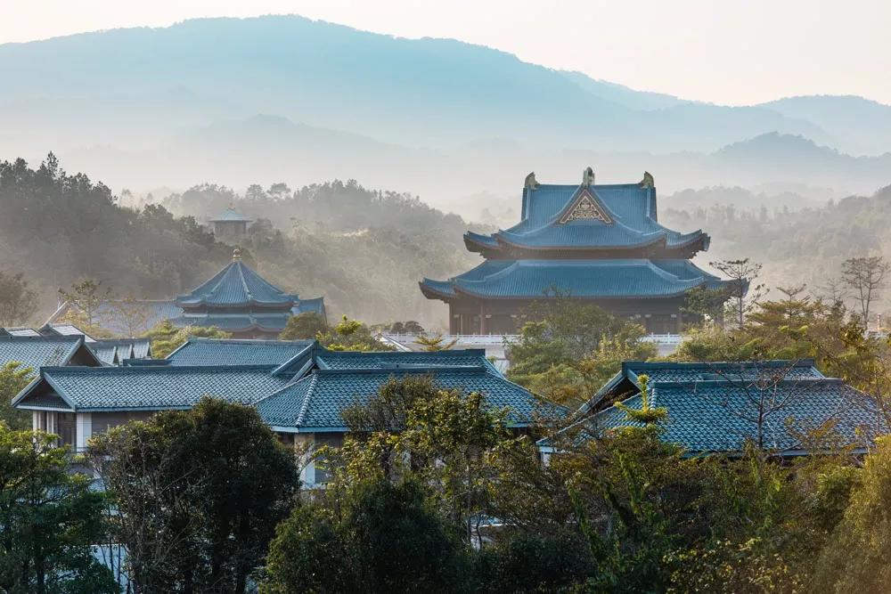
| 拥有蓝色皮肤的从都中国有一句古话，叫琴瑟和鸣，企业家的需求，其实也是从都的理想。
这个有着蓝色皮肤的庄园，希望为这些事业有成的领袖，做人生下半场的整体管理，包括财富、健康、情趣等，一起追寻人生的意义。
这极富挑战，毕竟他们行业不同，来自五湖四海，要按照统一的路径，达到同一个目标，谈何容易。
但从都愿意去做，也开启了这样的尝试，其以先进生活方式为突破口，汇聚力量、智慧与圈层，形成一股新的文化气象，并构建充满活力的国际化庄园生活。
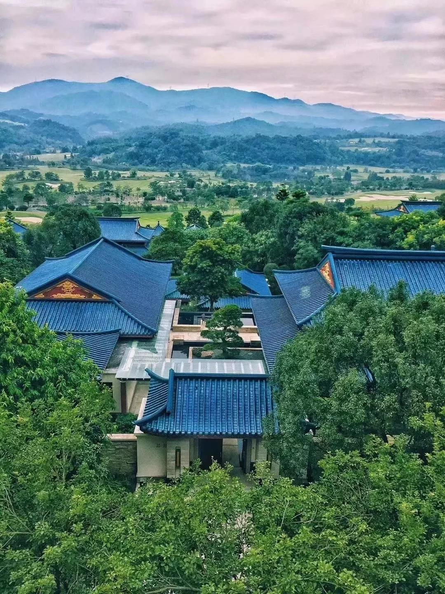
| 从都国际庄园，企业家趋之若鹜酒店式托管：别墅资产新模式
自然，这种生活便构成第一居所的精髓，而从都首先要解决的，便是别墅的核心痛点——空置。
数据显示，中国郊区部分别墅的空置率超过 80%，而一旦缺乏业主和物业的滋养，别墅很快就会荒废。
但从都不同，其拥有中国最好的酒店管理体系，包括先进的管理理念和近千人，接受法国皇室管家学院培训的服务团队，并创新性地运用到别墅身上，推出独一无二的 “托管模式”。
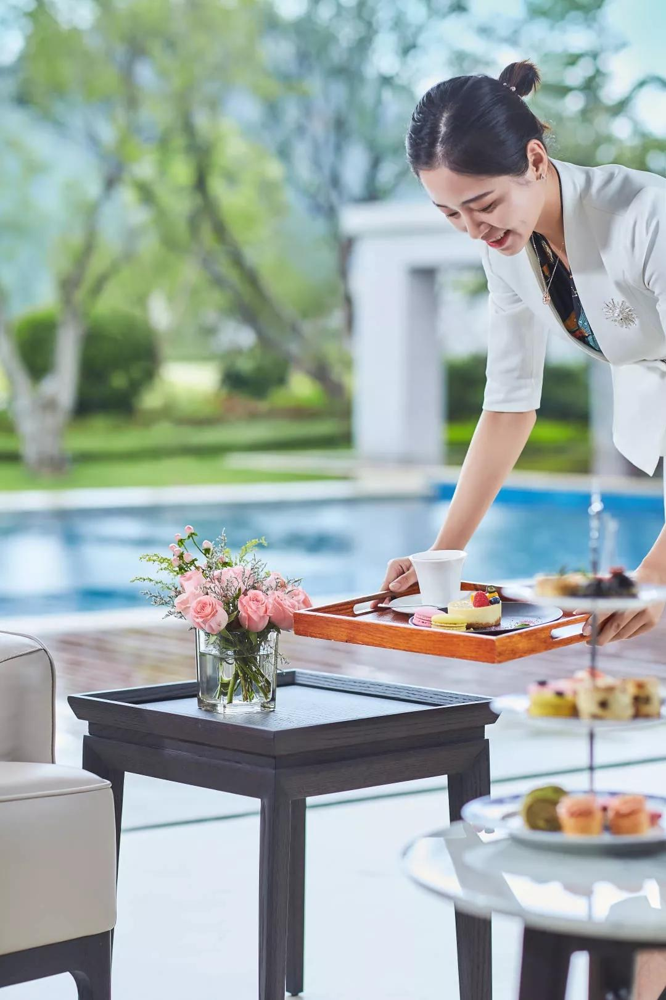
| 从都拥有卓越的酒店管理体系这种托管模式，分为轻托管和全托管，可谓为企业家量身定制。在托管期间，从都的专业团队将负责别墅的打理、运营与维护。
如果别墅使用率较低，可以采用 “全托管”，每年享受至少 96 万的回报，以及 60 天的别墅免费入住。
而如果未来两三年退休，将从都作为第一居所，那么可以 “轻托管”，享受酒店式物业服务，甚至日常生活食材配送服务等权益。
同时，无论哪种方式，作为从都业主可参与一年一度的从都国际论坛，与世界知名的前政要面对面，这是不可思议的机会与礼遇，与元首们一起挥杆、一起午宴，也许短短时间的交流将带来意料之外的智慧指点。
其实，无论是轻托管还是全托管，都在诠释从都 “三分建，七分养” 的理念。
而放眼全国，也只有从都能这么做，投资 80 亿打造高尔夫、博物馆、酒店、健康管理中心等国际顶配，而别墅只有 100 来套。
毕竟，这是志在百年的庄园，是中国的安纳伯格。
七条高速：天河半小时经济圈
如果说从都，是镶嵌在南中国的一颗蓝宝石，那么在未来几年内，随着多条高速的开通，其与广州市中心，深圳、东莞的距离，都将大幅缩短。
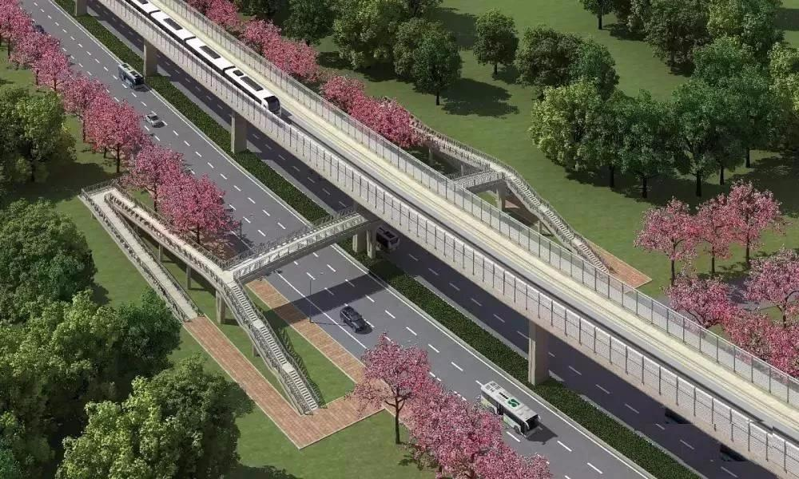
| 广从路快速效果图根据《广东省综合交通运输体系发展 “十三五” 规划》、《广州市通用航空发展规划（2016—2030 年）》等文件，未来从化将有7 条高速，2 条高铁以及 1 个机场。
其中，广州北部快线由科韵路到从化街口，预计今年 10 月动工，届时天河至从化只需半小时。
此外，从莞深高速惠州段已于今年 1 月开通，从都前往深圳和东莞可节省 1 小时，只需 80 分钟。
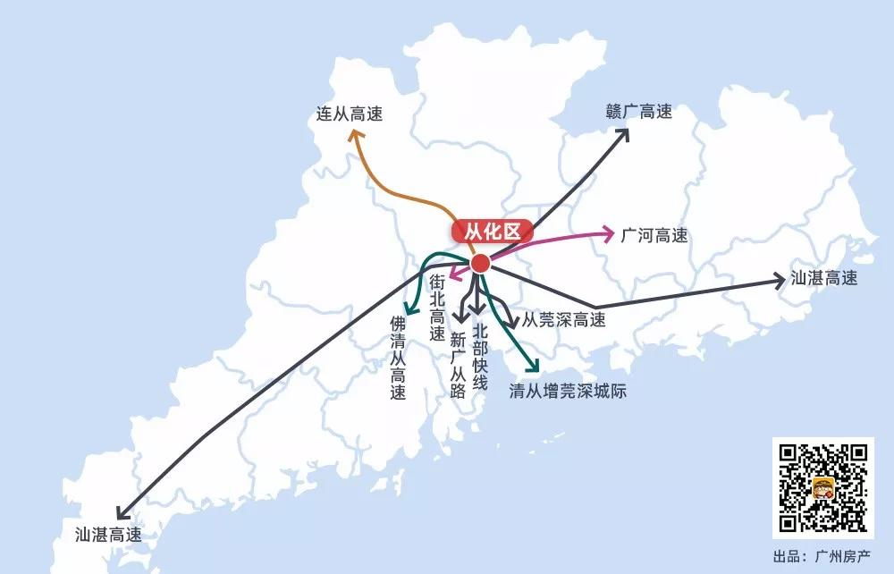
| 条条大道通从化在高铁方面，广河高铁计划设从化站，赣广高铁拟建线路亦途经从化，其中广东段预计 2020 年建成。
如果再加上清从增莞深城际，已经开通的地铁 14 号线，这里将四通八达。
占位湾区：生态核心 + 绿色增长极
其实，通勤只是从化蝶变的开始，今年 2 月 18 日，粤港澳大湾区规划纲要发布，而从化则被定义为：大湾区生态核心区和绿色增长极。
这彰显从化的独特，既要快速增长，也要青山绿水。
所谓快速增长，是指从化有匹配自己的产业，比如立白集团国际医药港、苏宁华南电商总部、阿里健康、广汽比亚迪新能源项目、赛莱拉干细胞等。
而从化的另一针强心剂，则是香港赛马会从化马场的投入运营，其距离从都只有 5 分钟车程，是大湾区体育产业的重要组成部分。
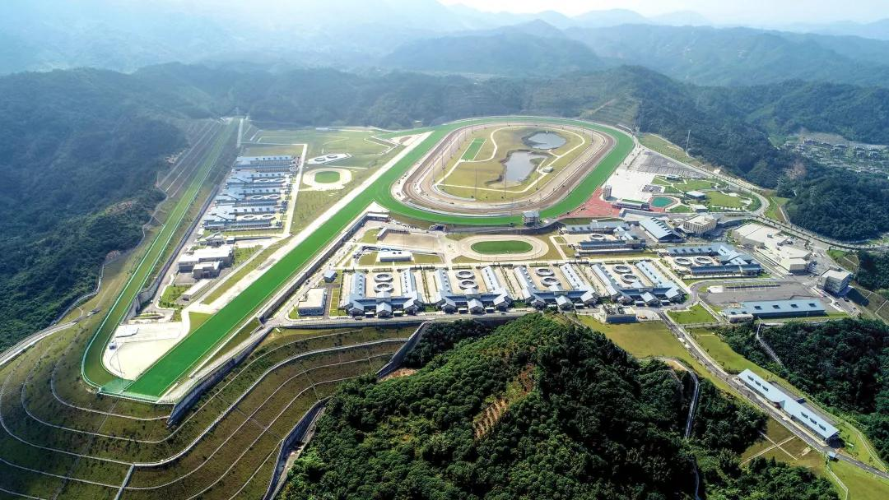
| 香港赛马会从化马场想一想香港马主的身份和社会阶层，就能体会其能带来的效能。
经济、人口、产业的发展，也必定带来配套的丰盛，根据规划，从化计划打造广州北部大学城，师生超过 10 万人，并修建一大批中小学。
同时，从化将加速推进海塱、东风、旺城三个商圈的规划布局，以及区妇幼保健院、区中医院的改造升级。
再加上闻名天下的温泉，以及石门、流溪河等国家级森林公园景区，在从化栖居将越来越多企业家的选择。
而从都，自然会成为他们的未来第一居所。
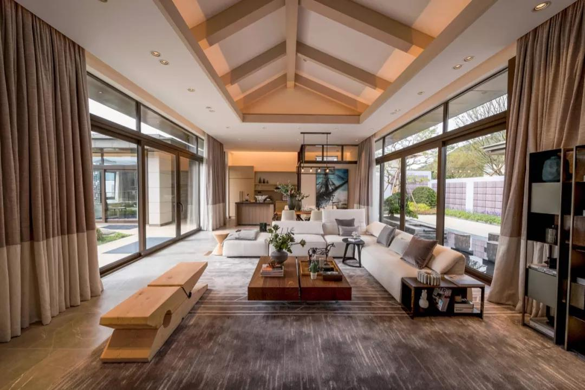
| 从都庄园温泉别墅客厅容积率仅 0.2：中国最具价值的别墅
既然是第一居所，从都在产品打造上，自然让企业家 “一见倾心”。
这个别墅群的容积率只有 0.2，在 2019 版产品打造上，则按照中国最舒展的尺度：建筑面宽 28 米，如果加上院子，则可达到 30 米。
宛如一部 IMAX，让视野实现了极限。
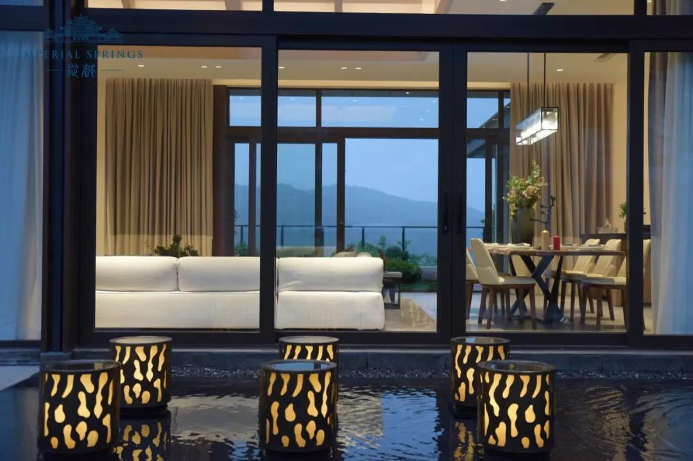
| 从都庄园温泉别墅，中国最具价值别墅除了入室便一眼难忘的自然画幅，从都庄园温泉别墅让企业家欲罢不能的地方，还有无处不在的庭院。
一般别墅加上天台花园，有四个院子已属优秀，而从都每一户可拥有 8—10 个庭院，最大面积达 1600 平。
“宅中有园，园中有屋，屋中有院，院中有树，树上见天，天中有月。” 林语堂的诗意心境，在此诠释得淋漓尽致。
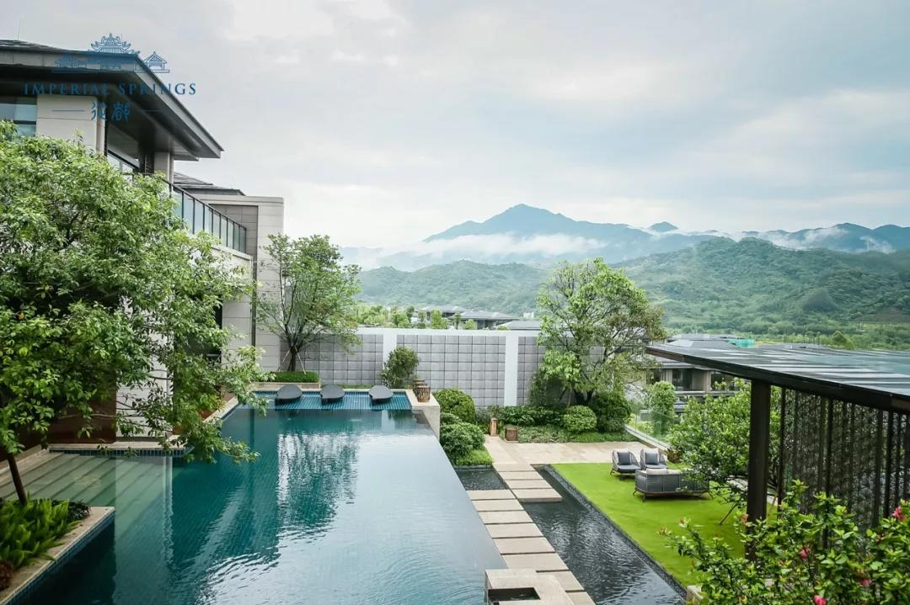
| 从都庄园温泉别墅大庭院和私家泳池当然，要有极致的居住体验，隐私最考验设计功力。
从都庄园温泉别墅拥有 4 种不同归家动线，业主安坐家中，绝对看不到急匆匆回家的保姆。如果需要酒店提供到会餐饮服务，也不会在客厅看到忙碌筹备的身影。因为包括保姆、酒店、物业等的各自服务动线，从都安排得井然有序。
同时，别墅散落在 4000 多亩的自然花园中，通过错落设计，避开视线对望，业主在私家庭院享受珍稀氡温泉时，也完全不必担心被打扰。
至于室内公共空间的切换，也通过恰到好处的屏风，一眼望不穿。
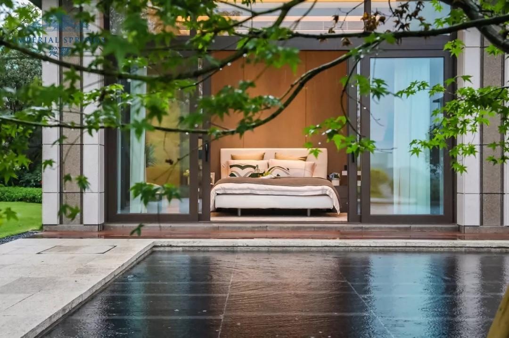
| 从都庄园温泉别墅内景这样的产品，是不是每个企业家都无法抵挡？
是的，这就是从都，这就是企业家们的未来第一居所，也是一个可以传世的百年庄园。
文章来源:广州房产